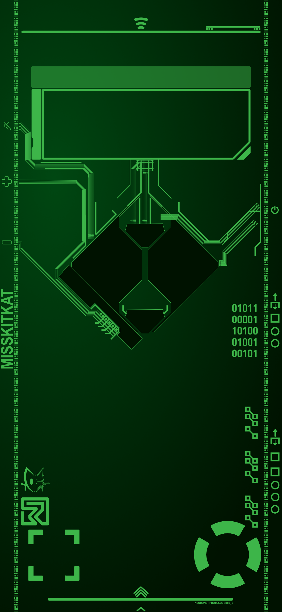
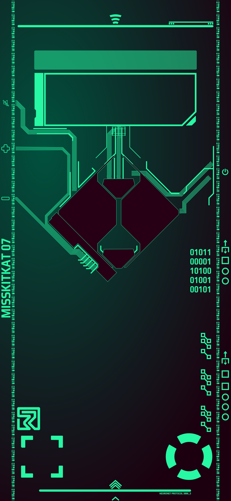
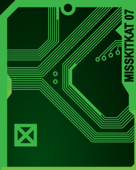
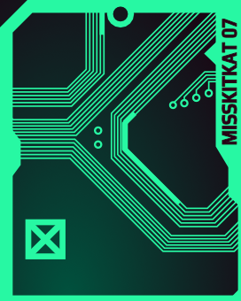
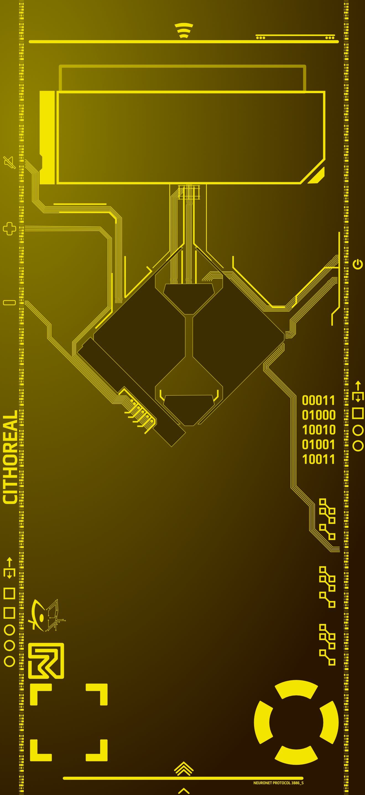
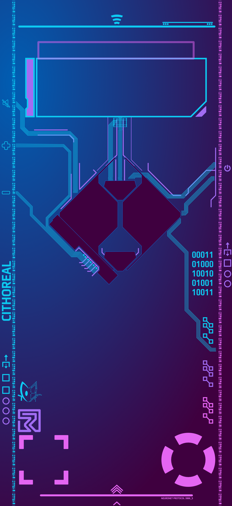
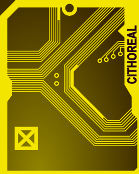
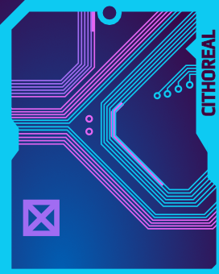

About Project CyberWallpapers
I created wallpapers for my friends and I's phones that mimic similar styles as in cyberpunk 2077. The style and the world in game stand out to me and I wanted to create something that I could bring with me anywhere I go. It was also when I was switching from Adobe products (illustrator, photoshop, indesign) to Affinity so it was an opportunity to learn how to use the program in a very detailed way. Each of them is named after usernames my friends and I have had while I made them.
Misskitkat

Lock Screen
Home Screen

Old Lock Screen
Old Home Screen

Current Watch Screen

Old Watch Screen
This is my current wallpaper that I created based off of Cyberpunk 2077. I utlized pieces of the UI from the inventory screens as well as other aspects that came up elsewhere in the game. Such as the relic or binary. I liked the red/green colors but I decided to switch to just a neon green and variations of that green when I started to develop more of a brand. Hence the rest of this website has that similar color palette. I have also needed to update the wallpaper based on when Apple decides to make UI changes.
Cithoreal

Lock Screen

Home Screen

Old Lock Screen

Old Home Screen

Current Watch Screen

Old Watch Screen
This is the current wallpaper of Cithoreal. They set it up to change when the sunsets and rises with their light vs dark mode. They had the same layout as mine until they switched to a newer iPhone that has more buttons and slightly different placements. They have two color palettes that they gravitate towards and I did replicated them the best I can in a 2D space.